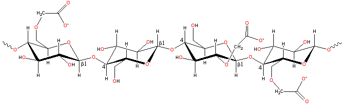

Carboxymethylcellulose dissolves rapidly to control viscosity.
Carboxymethylcellulose (CMC; E466) is a chemically modified derivative of cellulose formed by its reaction with alkali and chloroacetic acid.
A representative structure for carboxymethylcellulose
The CMC structure has the β-(1 4)-D-glucopyranose
polymer chain of cellulose. Different preparations
have varying degrees of substitution, generally
in the range of 0.6 - 0.95 derivatives per monomer unit. [Back to Top
4)-D-glucopyranose
polymer chain of cellulose. Different preparations
have varying degrees of substitution, generally
in the range of 0.6 - 0.95 derivatives per monomer unit. [Back to Top  ]
]
On average, CMC molecules
are somewhat shorter than native cellulose with
uneven derivatization giving areas of high and low substitution.
This substitution is mostly 2-O- and 6-O-linked, followed
in order of importance by 2,6-di-O- then 3-O-, 3,6-di-O-,
2,3-di-O- lastly 2,3,6-tri-O-.linked. It
appears that the substitution process is a slightly cooperative
(within residues) rather than random process giving somewhat
higher than expected unsubstituted and trisubstituted areas.
CMC molecules are most extended (rod-like) at low
concentrations. At higher concentrations the molecules
overlap and coil up and then, at high concentrations, entangle
to become a thermoreversible gel. Increasing ionic strength and reducing pH both decrease the viscosity as they cause
the polymer to become more coiled. [Back to Top  ]
]
Recent developments of carboxymethyl cellulose have been reviewed in 2021 [4270]. Most CMCs dissolve rapidly in cold water. They are mainly used for controlling viscosity without gelling (CMC, at typically used concentrations, does not gel even in the presence of calcium ions). As its viscosity drops during heating, CMC may be used to improve the volume yield during baking by encouraging gas bubble formation. Its viscosity control allows use as a thickener, phase and emulsion stabilizer (for example, with milk casein), and suspending agent. CMC can also be used for its water-holding capacity as this is high even at low viscosity, particularly when used as the Ca2+ salt. Thus, we use it for retarding staling and reducing fat uptake into fried foods.
The average chain length and degree of substitution are of great importance. The more-hydrophobic lower substituted CMCs are thixotropic, but more-extended higher substituted CMCs are pseudoplastic. At low pH, CMC may form cross-links through lactonization between carboxylic acid and free hydroxyl groups. Knowledge of the thermal stability of CMC has made it possible to predict the viscosity when CMC solutions are heated [3351].
The solution properties of a range of commercial CMC's have been investigated [879].
Interactive structures are available (Jmol). [Back to Top  ]
]
Home | Site Index | Hydrocolloids | Polysaccharide hydration | hydrogen-bonding | LSBU | Top
This page was established in 2002 and last updated by Martin Chaplin on 27 June, 2021